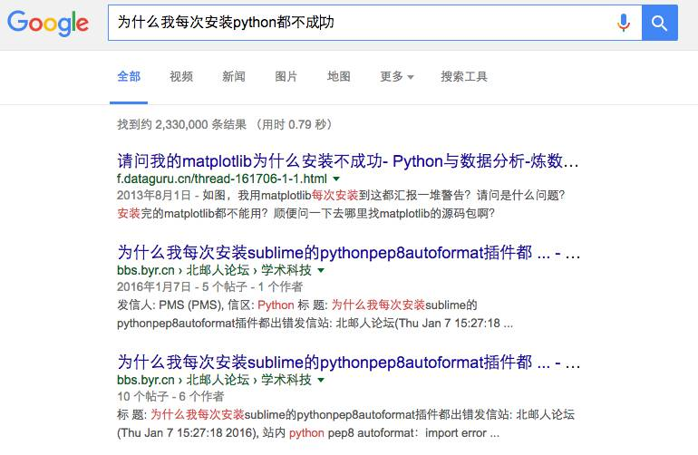
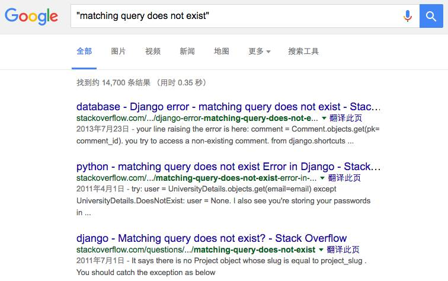
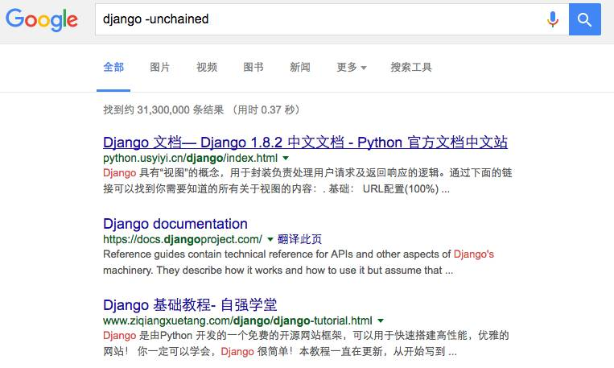

程序员学会这10招搜索技巧，彻底摆脱百度的牢笼！
没有人是完全独立的孤岛。要想彻底摆脱百度，不如学会一些巧妙的搜索技巧在最大程度上有效地获取更有价值的信息。
所以掌握搜索技巧是比选择搜索引擎更为重要的事。
对于刚开始写代码的程序员们来说，他们极有可能在写一个网页或者开发一个小应用时用搜索引擎搜索相关示例，幸运的话甚至可以搜到现成的代码。即使是经验丰富的程序员，通常也会为了节省时间和精力而在网上搜索前辈们踩过坑后的解决方案。
如果你是一名优秀的程序员或者你想要成为一名优秀的程序员，首先你应当认识到：正确地使用搜索引擎是学习编程的必备技能。
前方高能预警，即将为你揭秘程序员必须了解的八大搜索技巧，你 get 了吗？
技巧一：选择并提炼合适的搜索关键词
程序员使用搜索引擎多半是查找技术参考的，此时能合理有效地提炼关键词是非常有意义的事情，能够大大提高搜索的效率和搜索结果的质量。

如果你只是用“我安装 python 为什么不成功”、“运行 python 的时候报错”这样空泛的大白话去搜索，对不起万能的谷歌也帮不了忙……
所以你应该学会如何选择并提炼合适的关键词，而不是把整个句子照搬到搜索引擎上。
虽然现在的搜索引擎已经在语义分析和分词上做得相当成熟了，但还是建议用关键词来描述你的问题，建议用空格分割的 1~3 个关键词搜索，可以得到比较好的搜索结果。
技巧二：站内搜索：site
大多数搜索引擎，除了直接搜索关键字，都还会提供一些高级功能，常用的包括：
比如：在搜索框中搜索
docker site:http://blog.daocloud.io/
搜索关键词 docker，搜索引擎就会反馈 DaoCloud 博客内所有和关键词 docker 相关的条目。
对于一些没有站内搜索或站内搜索不好的网站来说这一技巧非常有用。
技巧三：准确搜索：''（双引号）
最简单、有效的准确搜索方式是学会使用完全匹配法：在关键词上加上 ''（双引号），在这种情况下，搜索引擎只会反馈和关键词完全吻合的搜索结果。
比如：在搜索框中搜索
'matching query does not exist'

可以得到精确匹配这段文字的结果，而不是把它们当做多个独立的关键词来搜索。准确搜索在排除常见但相近度偏低的信息时非常有用，可以为用户省去再度对结果进行筛选的麻烦。
技巧四：排除关键词： -（减号）
如果在进行准确搜索时没有找到自己想要的结果，用户可以对包含特定词汇的信息进行排除，仅需使用减号即可。
比如：在搜索框中搜索
django -unchained

单纯搜索 django，会得到一部分同名电影《Django Unchained》的结果。通过减号可以去除包含 unchained 的结果。
注意减号前面必须有空格，后面必须没空格。
技巧五：搜索相关网站：related
相关的限定词可用于搜索相关网站时使用。
比如，在搜索框中搜索：
related:docker.com
加入 related: 以后，即可得到所有和「docker.com」相关网站的反馈结果。
技巧六：直接使用报错信息搜索
如果你是在为你的程序无法运行而寻找解决方案，那么直接使用报错提示信息进行搜索是最好的选择。
一般来说，代码异常，都会输出异常的类型和位置，而应用软件的错误甚至还会提供对应的错误码，以便于定位和解决问题。用这些信息去搜索，比你用自然语言描述错误现象要精准几百倍。
技巧七：善用星号：*
正如拼图游戏「Scrabble」的空白方块一样，在搜索引擎中，我们可以用星号填补关键词中的缺失部分，不论缺失的是一连串单词的其中一个还是一个单词的某一部分。此外，当你希望搜索一篇确定性偏低的文章时，也可以使用星号填补缺失部分。
例如，如果你在搜索引擎中输入「architect*」，你所得到的反馈结果将会是所有包含 architect、architectural、architecture、architected、architecting 以及其他所有以「architect」作为开头的词汇的条目。
技巧八：学会分辨搜索结果的质量
百度对于搜索结果的排名策略一直遭到口诛笔伐，虽然搜索编程相关的资料不至于让你上当受骗，但搜索结果的质量还是有可能影响到你的学习效果。
它可能让你下载到的软件不是官方正版，或者是被植入了木马病毒的版本。也可能你轻信了投放推广的培训机构，花冤枉钱去上了一个糟糕的培训课程。更多的情况是，搜索出的结果里，有很多无效的、重复的甚至错误的内容，耽误你的时间，误导你的学习方向。
要对搜索结果保持怀疑的态度，不要只迷信排名靠前的结果，它们可能是推广，也可能是做过一些 SEO 的网站。
更多的是你作为一个优秀的程序员，需要学会自己判断搜索结果，总结经验，利用这些搜索技巧更高效地工作和学习。

学习信息安全也是如此，第一步先学会如何寻找解决问题的答案
学会搜索很重要